[2]:
%load_ext autoreload
%autoreload 2
[3]:
from py_pol import degrees, np
from py_pol.stokes import Stokes, create_Stokes
from py_pol.jones_vector import Jones_vector
np.set_printoptions(precision=2)
np.set_printoptions(suppress=True)
Create arrays¶
[33]:
# Create several objectsat once
print(create_Stokes(['E1', 'E2', 'E3']))
print(create_Stokes(['E1']))
print(create_Stokes('E1', N=3))
E1, E2, E3 = create_Stokes(['E1', 'E2', 'E3'])
print(E1, E2, E3)
[E1 is empty
, E2 is empty
, E3 is empty
]
E1 is empty
[E1 is empty
, E1 is empty
, E1 is empty
]
E1 is empty
E2 is empty
E3 is empty
[34]:
# From_matrix
M = [[1, 0.5, 0],
[0, 0.5, 2],
[1, 0.5, 0],
[1, 0.5, 0]]
E = Stokes()
E.from_matrix(M)
print(E)
M = [[1, 0.5, 1, 1],
[0, 0.5, 2, 2],
[2, 2, 3, 4]]
E.from_matrix(M)
print(E)
# print(E.M)
M = [1, 0, 1, 2]
E.from_matrix(M)
print(E)
# print(E.M)
M = [[[1, 2, 2.5, 1], [3, 4, 4.5, 1]],
[[5, 6, 6.5, 1], [7, 8, 8.5, 1]]]
E.from_matrix(M)
print(E)
S =
[+1.000] [+0.500] [+0.000]
[+0.000] [+0.500] [+2.000]
[+1.000] [+0.500] [+0.000]
[+1.000] [+0.500] [+0.000]
S =
[+1.000] [+0.000] [+2.000]
[+0.500] [+0.500] [+2.000]
[+1.000] [+2.000] [+3.000]
[+1.000] [+2.000] [+4.000]
S =
[+1.000]
[+0.000]
[+1.000]
[+2.000]
S S0 =
[[1. 3.]
[5. 7.]]
S S1 =
[[2. 4.]
[6. 8.]]
S S2 =
[[2.5 4.5]
[6.5 8.5]]
S S3 =
[[1. 1.]
[1. 1.]]
Operations¶
Sum¶
[35]:
# Stokes + Stokes
S1, S2 = create_Stokes(('S1', 'S2'))
M1 = np.array([1, 1, 0, 0])
M2 = np.array([1, 0, 1, 0])
S1.from_matrix(M1)
S2.from_matrix(M2)
print(S1+S2)
M2 = np.array([[1, 0, 1, 0], [1, 0, 0, 1]])
S2.from_matrix(M2)
print(S1+S2)
M1 = np.array([[2, 1, 1, 0], [2, 0, 0, 1]])
S1.from_matrix(M1)
print(S1+S2)
S1, S2 = create_Stokes(('S1', 'S2'))
M1 = np.array([1, 1, 0, 0])
M2 = np.array([1, 0, 0, 1])
S1.from_matrix(M1)
S2.from_matrix(M2)
print(S1+S2)
S1.set_global_phase(0*degrees)
S2.set_global_phase(90*degrees)
print(S1+S2)
S1 + S2 =
[+2.000]
[+1.000]
[+1.000]
[+0.000]
S1 + S2 =
[+2.000] [+2.000]
[+1.000] [+1.000]
[+1.000] [+0.000]
[+0.000] [+1.000]
S1 + S2 =
[+3.000] [+3.000]
[+1.000] [+0.000]
[+2.000] [+0.000]
[+0.000] [+2.000]
S1 + S2 =
[+2.000]
[+1.000]
[+0.000]
[+1.000]
S1 + S2 =
[+3.414]
[+2.414]
[+0.000]
[+2.414]
[36]:
# Stokes + Jones
S1 = Stokes('S1 incoherent')
M1 = np.array([1, 1, 0, 0])
S1.from_matrix(M1)
E1 = Jones_vector()
M2 = np.array([[0], [1]])
E1.from_matrix(M2)
print(S1+E1)
S1.name = 'S1 coherent'
S1.global_phase = 0
print(S1+E1)
S1 = Stokes('S1 incoherent')
M1 = np.array([[1, 0, 1, 0], [1, 1, 0, 0]])
S1.from_matrix(M1)
E1 = Jones_vector()
M2 = np.array([[1], [1j]])
E1.from_matrix(M2)
print(S1+E1)
S1.name = 'S1 coherent'
S1.global_phase = 0
print(S1+E1)
S1 = Stokes('S1 incoherent')
M1 = np.array([[1, 0, 1, 0], [1, 1, 0, 0]])
S1.from_matrix(M1)
E1 = Jones_vector()
M2 = np.array([[1], [1j]])
E1.from_matrix(M2)
print(S1-E1)
S1.name = 'S1 coherent'
S1.global_phase = 0
print(S1+E1)
S1 incoherent + E =
[+2.000]
[+0.000]
[+0.000]
[+0.000]
S1 coherent + E =
[+2.000]
[+0.000]
[+2.000]
[+0.000]
S1 incoherent + E =
[+3.000] [+3.000]
[+0.000] [+1.000]
[+1.000] [+0.000]
[+2.000] [+2.000]
S1 coherent + E =
[+4.414] [+5.000]
[+1.414] [+3.000]
[+2.414] [+0.000]
[+3.414] [+4.000]
S1 incoherent - E =
[+3.000] [+3.000]
[+0.000] [+1.000]
[+1.000] [+0.000]
[+2.000] [+2.000]
S1 coherent + E =
[+4.414] [+5.000]
[+1.414] [+3.000]
[+2.414] [+0.000]
[+3.414] [+4.000]
Multiplication¶
[37]:
# Number
S1 = Stokes('S1')
M1 = np.array([1, 1, 0, 0])
S1.from_matrix(M1)
print(S1*2)
S1 = Stokes('S1 incoherent')
M1 = np.array([1, 1, 0, 0])
S1.from_matrix(M1)
S2 = -2*S1
print(S2, S2.global_phase)
S1.name = 'S1 coherent'
S1.global_phase = 0
S2 = -2*S1
print(S2, S2.global_phase)
S1 = Stokes('S1')
M1 = np.array([1, 1, 0, 0])
S1.from_matrix(M1)
S2 = S1/2
print(S2)
2 * S1 =
[+2.000]
[+2.000]
[+0.000]
[+0.000]
-2 * S1 incoherent =
[+2.000]
[+2.000]
[+0.000]
[+0.000]
None
-2 * S1 coherent =
[+2.000]
[+2.000]
[+0.000]
[+0.000]
[3.14]
S1 / 2 =
[+0.500]
[+0.500]
[+0.000]
[+0.000]
[38]:
# Array
S1 = Stokes('S1')
M1 = np.array([1, 1, 0, 0])
S1.from_matrix(M1)
a = np.array([2, 0.1, 5])
print(S1*a)
S1 = Stokes('S1')
M1 = np.array([1, 1, 0, 0])
S1.from_matrix(M1)
a = np.array([[2, 0.1, 5], [3, 4, 5j]])
S2 = a*S1
print(S2, S2.parameters.global_phase())
S1 =
[+2.000] [+0.100] [+5.000]
[+2.000] [+0.100] [+5.000]
[+0.000] [+0.000] [+0.000]
[+0.000] [+0.000] [+0.000]
S1 S0 =
[[2. 0.1 5. ]
[3. 4. 5. ]]
S1 S1 =
[[2. 0.1 5. ]
[3. 4. 5. ]]
S1 S2 =
[[0. 0. 0.]
[0. 0. 0.]]
S1 S3 =
[[0. 0. 0.]
[0. 0. 0.]]
[[nan nan nan]
[nan nan nan]]
Getitems¶
[39]:
S1 = Stokes('S1')
M1 = np.random.rand(4,3,2)
S1.from_matrix(M1)
S1.set_global_phase(M1[0,:,:])
print(S1.M)
print(S1.shape)
print(S1[0])
print(S1[1:3])
print(S1[1,0])
print(S1[1:3,0:2])
[[0.37 0.55 0.11 0.8 0.48 0. ]
[0.19 0.29 0.67 0.92 0.53 0.19]
[0.05 0.23 0.49 0.52 0.83 0.59]
[0.84 0.59 0.9 0.46 0.89 0.44]]
[3, 2]
S1_picked =
[+0.366]
[+0.189]
[+0.049]
[+0.837]
S1_picked =
[+0.553] [+0.113]
[+0.291] [+0.665]
[+0.231] [+0.487]
[+0.588] [+0.897]
S1_picked =
[+0.113]
[+0.665]
[+0.487]
[+0.897]
S1_picked S0 =
[[0.11 0.8 ]
[0.48 0. ]]
S1_picked S1 =
[[0.67 0.92]
[0.53 0.19]]
S1_picked S2 =
[[0.49 0.52]
[0.83 0.59]]
S1_picked S3 =
[[0.9 0.46]
[0.89 0.44]]
Setitems¶
[40]:
# Stokes -> Stokes
S1 = Stokes('S1')
M1 = np.random.rand(4,3,2)
S1.from_matrix(M1)
print(S1.M)
S2 = Stokes('S2')
M2 = np.array([1, 1, 0, 0])
S2.from_matrix(M2)
S1[0] = S2
print(S1.M)
S1.from_matrix(M1)
S1[0:2] = S2
print(S1.M)
S1.from_matrix(M1)
S1[0,1] = S2
print(S1.M)
S1.from_matrix(M1)
S1[0:2,1] = S2
print(S1.M)
[[0.56 0.85 0.39 0.21 0.55 0.3 ]
[0.27 0.61 0.29 0.69 0.08 0.01]
[0.38 0.32 0.01 0.24 0.61 0.08]
[0.59 0.93 0.65 1. 0. 0.05]]
[[1. 0.85 0.39 0.21 0.55 0.3 ]
[1. 0.61 0.29 0.69 0.08 0.01]
[0. 0.32 0.01 0.24 0.61 0.08]
[0. 0.93 0.65 1. 0. 0.05]]
[[1. 1. 0.39 0.21 0.55 0.3 ]
[1. 1. 0.29 0.69 0.08 0.01]
[0. 0. 0.01 0.24 0.61 0.08]
[0. 0. 0.65 1. 0. 0.05]]
[[0.56 1. 0.39 0.21 0.55 0.3 ]
[0.27 1. 0.29 0.69 0.08 0.01]
[0.38 0. 0.01 0.24 0.61 0.08]
[0.59 0. 0.65 1. 0. 0.05]]
[[0.56 1. 0.39 1. 0.55 0.3 ]
[0.27 1. 0.29 1. 0.08 0.01]
[0.38 0. 0.01 0. 0.61 0.08]
[0.59 0. 0.65 0. 0. 0.05]]
[41]:
# Jones -> Stokes
S1 = Stokes('S1')
M1 = np.random.rand(4,3,2)
S1.from_matrix(M1)
print(S1.M)
S2 = Jones_vector('S2')
M2 = np.array([1, 1])
S2.from_matrix(M2)
S1[0] = S2
print(S1.M)
S1.from_matrix(M1)
S1[0:2] = S2
print(S1.M)
S1.from_matrix(M1)
S1[0,1] = S2
print(S1.M)
S1.from_matrix(M1)
S1[0:2,1] = S2
print(S1.M)
[[0.7 0.28 0.83 0.13 0.91 0.54]
[0.69 0.38 0.87 0.96 0.04 0.91]
[0.52 0.33 0.28 0.73 0.42 0.61]
[0.15 0.02 0.98 0.05 0.26 0.92]]
[[2. 0.28 0.83 0.13 0.91 0.54]
[0. 0.38 0.87 0.96 0.04 0.91]
[2. 0.33 0.28 0.73 0.42 0.61]
[0. 0.02 0.98 0.05 0.26 0.92]]
[[2. 2. 0.83 0.13 0.91 0.54]
[0. 0. 0.87 0.96 0.04 0.91]
[2. 2. 0.28 0.73 0.42 0.61]
[0. 0. 0.98 0.05 0.26 0.92]]
[[0.7 2. 0.83 0.13 0.91 0.54]
[0.69 0. 0.87 0.96 0.04 0.91]
[0.52 2. 0.28 0.73 0.42 0.61]
[0.15 0. 0.98 0.05 0.26 0.92]]
[[0.7 2. 0.83 2. 0.91 0.54]
[0.69 0. 0.87 0. 0.04 0.91]
[0.52 2. 0.28 2. 0.42 0.61]
[0.15 0. 0.98 0. 0.26 0.92]]
Manipulations¶
[29]:
# Sum
S1 = Stokes('S1')
M1 = np.random.rand(4,3,2)
S1.from_matrix(M1)
print(S1.M)
print(S1.sum(), np.sum(M1, axis=(1,2)))
print('\n\n')
S1 = Stokes('S1')
M1 = np.random.rand(4,3,2)
S1.from_matrix(M1)
print(S1.M)
print(S1.sum(axis=0), np.sum(M1, axis=1))
print('\n\n')
S1 = Stokes('S1')
M1 = np.random.rand(4,3,2, 5)
S1.from_matrix(M1)
# print(S1.M)
print(S1.sum(axis=(0, 1)), np.sum(M1, axis=(1,2)))
[[0.55 0.13 0.95 0.41 0.48 0.84]
[0.78 0.36 0.85 0.58 0.8 0.47]
[0.32 0.21 0.71 0.21 0.86 0.68]
[0.53 0.46 0.72 0.17 0.21 0.14]]
Sum of S1 =
[+3.364]
[+3.848]
[+2.978]
[+2.223]
[3.36 3.85 2.98 2.22]
[[0.73 0.18 0.84 0.15 0.53 0.44]
[0.87 0.5 0.47 0.03 0.88 0.65]
[0.41 0.58 0.46 0.94 0.63 0.11]
[0.21 0.35 0.28 0.89 0.14 0.4 ]]
Sum of S1 =
[+2.109] [+0.766]
[+2.229] [+1.177]
[+1.504] [+1.632]
[+0.630] [+1.642]
[[2.11 0.77]
[2.23 1.18]
[1.5 1.63]
[0.63 1.64]]
Sum of S1 =
[+2.889] [+3.947] [+3.404] [+3.606] [+3.020]
[+3.648] [+3.923] [+3.652] [+4.066] [+2.743]
[+3.847] [+2.426] [+3.524] [+2.732] [+3.224]
[+2.572] [+2.394] [+4.230] [+2.799] [+1.526]
[[2.89 3.95 3.4 3.61 3.02]
[3.65 3.92 3.65 4.07 2.74]
[3.85 2.43 3.52 2.73 3.22]
[2.57 2.39 4.23 2.8 1.53]]
[23]:
# Rotation
M = np.array([1, 1, 0, 0])
angle = [0*degrees, 45*degrees, 90*degrees, 120*degrees, 135*degrees]
S = Stokes('S1')
S.from_matrix(M)
print(S.rotate(angle))
angle = 20*degrees
S = Stokes('S1')
S.from_matrix(M)
S2 = S.rotate(angle, keep=True)
# S2.name = 'S2'
print(S, S2)
angle = 20*degrees
angle2 = [0*degrees, 45*degrees, 90*degrees, 120*degrees, 135*degrees]
S = Stokes('S1')
S.linear_light(azimuth=angle2)
S2 = S.rotate(angle, keep=True)
S2.name = 'S2'
print(S, S2)
S1 S0 =
[1. 1. 1. 1. 1.]
S1 S1 =
[ 1. 0. -1. -0.5 -0. ]
S1 S2 =
[ 0. 1. 0. -0.87 -1. ]
S1 S3 =
[0. 0. 0. 0. 0.]
S1 =
[+1.000]
[+1.000]
[+0.000]
[+0.000]
S1 @ 20.00 deg =
[+1.000]
[+0.766]
[+0.643]
[+0.000]
S1 =
[+1.000] [+1.000] [+1.000] [+1.000] [+1.000]
[+1.000] [+0.000] [-1.000] [-0.500] [-0.000]
[+0.000] [+1.000] [+0.000] [-0.866] [-1.000]
[+0.000] [+0.000] [+0.000] [+0.000] [+0.000]
S2 S0 =
[1. 1. 1. 1. 1.]
S2 S1 =
[ 0.77 -0.64 -0.77 0.17 0.64]
S2 S2 =
[ 0.64 0.77 -0.64 -0.98 -0.77]
S2 S3 =
[0. 0. 0. 0. 0.]
[64]:
# Depolarize
S = Stokes()
S.from_components((3, np.sqrt(3), np.sqrt(3), np.sqrt(3)))
S2 = S.set_depolarization(degree_pol = 0.5, keep=True)
print(S2, S2.parameters.degree_polarization())
S2 = S.set_depolarization(degree_pol = 0.5, ratio=[0.0, 1, 2], keep=True)
print(S2, S2.parameters.degree_polarization())
S2 = S.add_depolarization(degree_pol = 0.5, keep=True)
print(S2, S2.parameters.degree_polarization())
S depolarized =
[+3.000]
[+0.866]
[+0.866]
[+0.866]
0.5000000000000001
S depolarized =
[+3.000]
[+0.000]
[+0.671]
[+1.342]
0.5
S depolarized =
[+3.000]
[+1.732]
[+1.732]
[+1.732]
0.9999999999999999
[ ]:
[19]:
E1 Ex = [ 1. 0.71 0. -0.5 -0.71]
Ey = [0. 0.71 1. 0.87 0.71]
E2 = [+0.940
+0.342]
[40]:
azimuth = np.random.rand(5) * 180 * degrees
a = np.random.rand(5)
b = np.random.rand(5)
(solutionX, solutionY) = (a, b)
j1 = Jones_vector()
j1.elliptical_light(
azimuth=azimuth, a=a, b=b, kind='l')
proposalX, proposalY = j1.parameters.ellipse_axes()
print(solutionX, proposalX)
print(solutionY, proposalY)
[0.73 0.92 0.34 0.63 0.11] [0.73 0.92 0.81 0.73 0.22]
[0.57 0.82 0.81 0.73 0.22] [0.57 0.82 0.34 0.63 0.11]
Creation¶
[75]:
# From components
S = Stokes()
S.from_components((1, 1, 0, 0))
print(S)
S = Stokes()
S.from_components((np.ones(5), 1, 0, 0))
print(S)
S =
[+1.000]
[+1.000]
[+0.000]
[+0.000]
S =
[+1.000] [+1.000] [+1.000] [+1.000] [+1.000]
[+1.000] [+1.000] [+1.000] [+1.000] [+1.000]
[+0.000] [+0.000] [+0.000] [+0.000] [+0.000]
[+0.000] [+0.000] [+0.000] [+0.000] [+0.000]
[19]:
# Linear light
S = Stokes()
angle = np.array([0, 45, 90]) * degrees
S.linear_light(azimuth = angle)
print(S)
S = Stokes()
angle = np.array([0, 45, 90]) * degrees
pd = np.linspace(0,1,3)
S.linear_light(azimuth = angle, intensity = 2, pol_degree=pd)
print(S)
S =
[+1.000] [+1.000] [+1.000]
[+1.000] [+0.000] [-1.000]
[+0.000] [+1.000] [+0.000]
[+0.000] [+0.000] [+0.000]
S =
[+2.000] [+2.000] [+2.000]
[+0.000] [+0.000] [-2.000]
[+0.000] [+1.000] [+0.000]
[+0.000] [+0.000] [+0.000]
[27]:
# Circular light
S = Stokes()
angle = np.array([0, 45, 90]) * degrees
S.circular_light()
print(S)
S = Stokes()
intensity = np.array([0.5, 1, 2])
pd = np.linspace(0,1,3)
S.circular_light(intensity = intensity, pol_degree=pd, kind='l')
print(S)
S =
[+1.000]
[+0.000]
[+0.000]
[+1.000]
S =
[+0.500] [+1.000] [+2.000]
[+0.000] [+0.000] [+0.000]
[+0.000] [+0.000] [+0.000]
[-0.000] [-0.500] [-2.000]
[70]:
# Elliptical light
azimuth = np.random.rand(5) * 180 * degrees
a = np.random.rand(5)
b = np.random.rand(5)
(solutionX, solutionY) = (a, b)
S = Stokes()
S.elliptical_light(
azimuth=azimuth, a=a, b=b, kind='l')
print(S)
proposalX, proposalY = S.parameters.ellipse_axes()
print(solutionX, proposalX)
print(solutionY, proposalY)
S =
[+0.704] [+0.393] [+0.325] [+1.386] [+0.422]
[-0.276] [-0.174] [-0.313] [-0.030] [+0.296]
[-0.639] [+0.055] [-0.028] [-0.001] [+0.280]
[-0.103] [-0.348] [-0.083] [-1.385] [-0.110]
[0.06 0.54 0.57 0.84 0.64] [0.84 0.54 0.57 0.84 0.64]
[0.84 0.32 0.07 0.82 0.09] [0.06 0.32 0.07 0.82 0.09]
d:\codigo\py_pol\py_pol\jones_vector.py:1200: UserWarning: Non-pure Stokes vector transformed into a Jones vector
[48]:
# general_charac_angles
S = Stokes()
S.general_charac_angles(length=3)
print(S)
N = 5
alpha = np.random.rand(N) * 90 * degrees
delta = np.random.rand(N) * 360 * degrees
intensity = np.random.rand(5)
degree_pol = np.random.rand(5)
global_phase = np.random.rand(N) * 360 * degrees
S.general_charac_angles(alpha=alpha, delay=delta, intensity=intensity, degree_pol=degree_pol, global_phase=global_phase)
print(S)
al, delt = S.parameters.charac_angles()
print(al, delt)
print(alpha, delta)
S =
[+1.000] [+1.000] [+1.000]
[+1.000] [+1.000] [+1.000]
[+0.000] [+0.000] [+0.000]
[+0.000] [+0.000] [+0.000]
S =
[+0.258] [+0.102] [+0.975] [+0.294] [+0.046]
[+0.178] [-0.083] [-0.354] [-0.038] [+0.034]
[-0.075] [-0.018] [+0.146] [-0.024] [+0.000]
[+0.069] [-0.031] [+0.131] [-0.058] [-0.009]
[0.26 1.37 1.32 1.05 0.13] [2.39 4.18 0.73 4.32 4.76]
[0.26 1.37 1.32 1.05 0.13] [2.39 4.18 0.73 4.32 4.76]
[41]:
alpha = np.linspace(45*degrees, 45*degrees, 7)
delay = np.linspace(0, 360*degrees, 7)
Alpha, Delay = np.meshgrid(alpha, delay)
print('Initial Alpha',Alpha)
print('Initial Delay',Delay)
S = Stokes("Source 1")
S.general_charac_angles(alpha=Alpha, delay=Delay)
_ = S.parameters.delay(draw=True, verbose=True)
Initial Alpha [[0.79 0.79 0.79 0.79 0.79 0.79 0.79]
[0.79 0.79 0.79 0.79 0.79 0.79 0.79]
[0.79 0.79 0.79 0.79 0.79 0.79 0.79]
[0.79 0.79 0.79 0.79 0.79 0.79 0.79]
[0.79 0.79 0.79 0.79 0.79 0.79 0.79]
[0.79 0.79 0.79 0.79 0.79 0.79 0.79]
[0.79 0.79 0.79 0.79 0.79 0.79 0.79]]
Initial Delay [[0. 0. 0. 0. 0. 0. 0. ]
[1.05 1.05 1.05 1.05 1.05 1.05 1.05]
[2.09 2.09 2.09 2.09 2.09 2.09 2.09]
[3.14 3.14 3.14 3.14 3.14 3.14 3.14]
[4.19 4.19 4.19 4.19 4.19 4.19 4.19]
[5.24 5.24 5.24 5.24 5.24 5.24 5.24]
[6.28 6.28 6.28 6.28 6.28 6.28 6.28]]
creation delta: [0. 0. 0. 0. 0. 0. 0. 1.05 1.05 1.05 1.05 1.05 1.05 1.05
2.09 2.09 2.09 2.09 2.09 2.09 2.09 3.14 3.14 3.14 3.14 3.14 3.14 3.14
4.19 4.19 4.19 4.19 4.19 4.19 4.19 5.24 5.24 5.24 5.24 5.24 5.24 5.24
0. 0. 0. 0. 0. 0. 0. ]
delay: [[0. 0. 0. 0. 0. 0. 0. ]
[1.05 1.05 1.05 1.05 1.05 1.05 1.05]
[5.24 5.24 5.24 5.24 5.24 5.24 5.24]
[3.14 3.14 3.14 3.14 3.14 3.14 3.14]
[1.05 1.05 1.05 1.05 1.05 1.05 1.05]
[5.24 5.24 5.24 5.24 5.24 5.24 5.24]
[0. 0. 0. 0. 0. 0. 0. ]]
The delay of Source 1 is (deg):
[[ 0. 0. 0. 0. 0. 0. 0.]
[ 60. 60. 60. 60. 60. 60. 60.]
[300. 300. 300. 300. 300. 300. 300.]
[180. 180. 180. 180. 180. 180. 180.]
[ 60. 60. 60. 60. 60. 60. 60.]
[300. 300. 300. 300. 300. 300. 300.]
[ 0. 0. 0. 0. 0. 0. 0.]]
The mean value is 128.57142857142858 +- 121.82288917330195
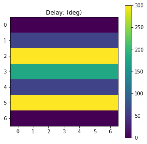
[44]:
alpha = 44*degrees
delay = np.linspace(0, 360*degrees, 21)
print('Initial Alpha',alpha)
print('Initial Delay',delay)
S = Stokes("Source 1")
S.general_charac_angles(alpha=alpha, delay=delay)
_ = S.parameters.delay(draw=True, verbose=True)
Initial Alpha 0.767944870877505
Initial Delay [0. 0.31 0.63 0.94 1.26 1.57 1.88 2.2 2.51 2.83 3.14 3.46 3.77 4.08
4.4 4.71 5.03 5.34 5.65 5.97 6.28]
creation delta: [0. 0.31 0.63 0.94 1.26 1.57 1.88 2.2 2.51 2.83 3.14 3.46 3.77 4.08
4.4 4.71 5.03 5.34 5.65 5.97 0. ]
delay: [0. 0.31 0.63 0.94 1.26 1.57 1.88 2.2 2.51 2.83 0. 3.46 3.77 4.08
4.4 4.71 5.03 5.34 5.65 5.97 0. ]
The delay of Source 1 is (deg):
[ 0. 18. 36. 54. 72. 90. 108. 126. 144. 162. 0. 198. 216. 234.
252. 270. 288. 306. 324. 342. 0.]
The mean value is 154.28571428571428 +- 112.9673964162281
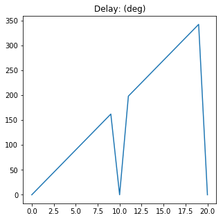
[6]:
# general_azimuth_ellipticity
S = Stokes()
S.general_azimuth_ellipticity(length=3)
print(S)
N = 5
azimuth = np.random.rand(N) * 180 * degrees
ellipticity = (np.random.rand(N)-0.5) * 90 * degrees
intensity = np.random.rand(5)
degree_pol = np.random.rand(5)
global_phase = np.random.rand(N) * 360 * degrees
S.general_azimuth_ellipticity(azimuth=azimuth, ellipticity=ellipticity, intensity=intensity, degree_pol=degree_pol, global_phase=global_phase)
print(S)
az, el = S.parameters.azimuth_ellipticity()
print(az, el)
print(azimuth, ellipticity)
S =
[+1.000] [+1.000] [+1.000]
[+1.000] [+1.000] [+1.000]
[+0.000] [+0.000] [+0.000]
[+0.000] [+0.000] [+0.000]
S =
[+0.748] [+0.722] [+0.251] [+0.556] [+0.373]
[+0.259] [-0.211] [-0.104] [+0.046] [+0.043]
[-0.082] [+0.396] [-0.153] [+0.109] [-0.144]
[+0.355] [+0.214] [+0.127] [+0.072] [-0.127]
[2.99 1.03 2.06 0.58 2.5 ] [ 0.46 0.22 0.3 0.27 -0.35]
[2.99 1.03 2.06 0.58 2.5 ] [ 0.46 0.22 0.3 0.27 -0.35]
[5]:
# from_Jones / from_Stokes
N=100
I = np.random.rand(N) * 10
az = np.random.rand(N) * 180 * degrees
el = (np.random.rand(N) * 90 - 45) * degrees
S = Stokes()
S.general_azimuth_ellipticity(intensity=I, azimuth=az, ellipticity=el)
J = Jones_vector()
J.from_Stokes(S)
S2 = Stokes()
S2.from_Jones(J)
print(S==S2)
S - S S0 = [ 0. 0. 0. 0. 0. 0. -0. 0. 0. -0. 0. 0. 0. 0. -0. 0. 0. 0.
0. 0. 0. -0. -0. -0. 0. -0. 0. 0. -0. 0. -0. 0. -0. 0. 0. 0.
0. 0. -0. 0. -0. 0. 0. 0. 0. 0. 0. 0. 0. 0. -0. 0. 0. -0.
0. -0. 0. 0. 0. -0. -0. 0. -0. 0. 0. 0. -0. 0. -0. 0. 0. 0.
-0. 0. -0. 0. 0. 0. 0. 0. 0. 0. -0. 0. 0. 0. -0. 0. -0. 0.
0. -0. 0. 0. 0. -0. -0. -0. -0. -0.]
S1 = [ 0. 0. 0. 0. -0. 0. -0. 0. -0. -0. -0. -0. -0. -0. -0. -0. -0. 0.
-0. 0. 0. -0. -0. 0. -0. -0. 0. -0. 0. 0. -0. 0. -0. 0. -0. -0.
-0. 0. -0. 0. -0. 0. 0. 0. 0. -0. -0. -0. -0. 0. -0. 0. 0. 0.
0. -0. -0. -0. 0. 0. -0. -0. -0. -0. 0. -0. 0. 0. 0. -0. -0. 0.
-0. 0. 0. 0. 0. 0. -0. -0. 0. 0. 0. -0. 0. -0. -0. -0. -0. 0.
-0. -0. 0. 0. -0. -0. 0. -0. 0. 0.]
S2 = [ 0. 0. 0. 0. 0. -0. 0. -0. -0. 0. 0. -0. 0. 0. 0. 0. 0. 0.
0. 0. 0. 0. -0. -0. 0. 0. 0. 0. 0. -0. -0. 0. -0. 0. 0. -0.
-0. 0. 0. -0. 0. 0. -0. 0. 0. 0. -0. 0. 0. 0. 0. 0. 0. 0.
0. 0. -0. -0. 0. 0. -0. 0. 0. 0. 0. 0. -0. -0. -0. 0. 0. -0.
0. 0. -0. -0. -0. 0. 0. 0. 0. 0. 0. -0. -0. 0. -0. 0. -0. -0.
0. 0. 0. -0. 0. 0. -0. -0. -0. -0.]
S3 = [-0. 0. 0. 0. 0. 0. -0. 0. -0. 0. 0. 0. 0. -0. 0. 0. -0. 0.
0. -0. 0. 0. -0. -0. -0. 0. 0. 0. 0. 0. -0. 0. 0. -0. 0. 0.
0. -0. 0. 0. 0. -0. 0. -0. 0. -0. 0. -0. -0. -0. 0. 0. 0. 0.
0. -0. 0. 0. 0. 0. 0. -0. -0. -0. 0. 0. 0. 0. -0. 0. 0. 0.
-0. 0. -0. -0. -0. -0. 0. 0. 0. 0. 0. -0. 0. 0. -0. 0. -0. 0.
0. 0. 0. 0. -0. -0. 0. 0. -0. -0.]
[0. 0. 0. 0. 0. 0. 0. 0. 0. 0. 0. 0. 0. 0. 0. 0. 0. 0. 0. 0. 0. 0. 0. 0.
0. 0. 0. 0. 0. 0. 0. 0. 0. 0. 0. 0. 0. 0. 0. 0. 0. 0. 0. 0. 0. 0. 0. 0.
0. 0. 0. 0. 0. 0. 0. 0. 0. 0. 0. 0. 0. 0. 0. 0. 0. 0. 0. 0. 0. 0. 0. 0.
0. 0. 0. 0. 0. 0. 0. 0. 0. 0. 0. 0. 0. 0. 0. 0. 0. 0. 0. 0. 0. 0. 0. 0.
0. 0. 0. 0.]
[ True True True True True True True True True True True True
True True True True True True True True True True True True
True True True True True True True True True True True True
True True True True True True True True True True True True
True True True True True True True True True True True True
True True True True True True True True True True True True
True True True True True True True True True True True True
True True True True True True True True True True True True
True True True True]
d:\codigo_ucm\py_pol\py_pol\stokes.py:2012: RuntimeWarning: invalid value encountered in sqrt
DD = np.sqrt(1 - DOP**2)
d:\codigo_ucm\py_pol\py_pol\jones_vector.py:1199: RuntimeWarning: invalid value encountered in greater
if np.any(DOP > tol_default):
Parameters¶
[94]:
# Components
S = Stokes()
N = 5
azimuth = np.random.rand(N) * 180 * degrees
ellipticity = (np.random.rand(N)-0.5) * 90 * degrees
azimuth[-1] = np.nan
intensity = np.random.rand(5)
degree_pol = np.random.rand(5)
global_phase = np.random.rand(N) * 360 * degrees
S.general_azimuth_ellipticity(azimuth=azimuth, ellipticity=ellipticity, intensity=intensity,
degree_pol=degree_pol, global_phase=global_phase)
print(S)
az, el = S.parameters.azimuth_ellipticity()
print(az, el)
print(azimuth, ellipticity)
S =
[+0.580] [+0.601] [+0.712] [+0.453] [+0.555]
[+0.171] [-0.361] [-0.078] [+0.078] [+0.000]
[+0.346] [+0.078] [+0.149] [-0.038] [+0.000]
[-0.089] [-0.215] [+0.554] [+0.026] [+0.000]
[0.56 1.46 1.03 2.91 nan] [-0.11 -0.26 0.64 0.14 nan]
[0.56 1.46 1.03 2.91 nan] [-0.11 -0.26 0.64 0.14 0.67]
[11]:
# Polarized unpolarized
S1 = Stokes('S1')
M1 = np.array([1, 1, 0, 0])
S1.from_matrix(M1)
print(S1.parameters.polarized_unpolarized())
(1.0, 1, 0, 0)
(0.0, 0, 0, 0)
(Polarized S1 =
[+1.000]
[+1.000]
[+0.000]
[+0.000]
, Unpolarized S1 =
[+0.000]
[+0.000]
[+0.000]
[+0.000]
)
[38]:
# All
S = Stokes()
N = 100
alpha = np.random.rand(N, N) * 90 * degrees
delta = np.random.rand(N, N) * 360 * degrees
intensity = np.random.rand(N, N)
degree_pol = np.random.rand(N, N)
global_phase = np.random.rand(N, N) * 360 * degrees
S.general_charac_angles(alpha=alpha, delay=delta, intensity=intensity, degree_pol=degree_pol, global_phase=global_phase)
S.parameters.get_all(verbose=True, draw=True)
The intensity of S is (a.u.):
[[0.3 0.05 0.24 ... 0.67 0.11 0.65]
[0.91 0.1 0.85 ... 0.19 0.77 0.94]
[0.41 0.93 0.56 ... 0.76 0.31 0.13]
...
[0.32 0.65 0.08 ... 0.68 0.19 0.89]
[0.91 0.98 0.03 ... 0.41 0.47 0.34]
[0.84 0.02 0.81 ... 0.9 0.26 0.86]]
The mean value is 0.495290613147764 +- 0.2888025732260311
alpha: self = [100, 100]; az = (100, 100)
alpha: alpha = (100, 100);
The elctric field amplitudes of S are (V/m):
Ex (V/m)
[[0.16 0.04 0.04 ... 0.03 0.01 0.43]
[0.12 0.01 0.33 ... 0.08 0.28 0.37]
[0. 0.22 0.01 ... 0.35 0.06 0. ]
...
[0.01 0.09 0.02 ... 0.27 0.01 0.17]
[0.15 0.8 0. ... 0. 0.33 0.06]
[0.14 0. 0.06 ... 0.2 0.04 0.05]]
Ey (V/m)
[[0.09 0. 0.01 ... 0.04 0.02 0.11]
[0.19 0.01 0.3 ... 0.09 0.59 0.56]
[0.18 0.05 0.03 ... 0.33 0.02 0.04]
...
[0.07 0.23 0.01 ... 0.15 0.01 0.25]
[0.28 0.32 0. ... 0.06 0.21 0.27]
[0.17 0.01 0.29 ... 0.16 0.04 0.07]]
Eu (V/m)
[[0.34 0.04 0.45 ... 0.79 0.29 0.46]
[0.83 0.29 0.64 ... 0.26 0.36 0.51]
[0.49 0.84 0.73 ... 0.53 0.49 0.29]
...
[0.5 0.64 0.23 ... 0.61 0.42 0.77]
[0.77 0.34 0.17 ... 0.59 0.29 0.25]
[0.79 0.1 0.71 ... 0.8 0.44 0.88]]
The mean value of param Ex (V/m) is 0.15678287141730324 +- 0.1721125161000326
The mean value of param Ey (V/m) is 0.15843503742721257 +- 0.17447304193203275
The mean value of param Eu (V/m) is 0.4421060905742679 +- 0.22887235353259203
The global phase of S is (deg):
[[339.41 0.7 253.48 ... 96.74 175.07 63.64]
[331.54 231.83 350.34 ... 160.77 39.95 135.37]
[137.86 242.04 5.63 ... 229.7 353.53 128.25]
...
[125.21 22.53 69.28 ... 79.23 326.63 0.59]
[ 95.5 8.65 333.8 ... 86.12 268.8 16.4 ]
[266.95 78.83 160.02 ... 66.4 253.32 91.14]]
The mean value is 178.95725521104563 +- 104.30194197512238
The degree of depolarization of S is:
[[0.79 0.28 0.99 ... 1. 0.97 0.74]
[0.97 0.99 0.85 ... 0.76 0.55 0.7 ]
[0.9 0.97 1. ... 0.78 0.98 0.95]
...
[0.98 0.93 0.94 ... 0.89 1. 0.94]
[0.94 0.47 1. ... 0.99 0.57 0.59]
[0.96 0.81 0.93 ... 0.96 0.97 1. ]]
The mean value is 0.7846204499182302 +- 0.2230555104230709
The degree of polarization of S is:
[[0.61 0.96 0.17 ... 0.07 0.24 0.68]
[0.25 0.13 0.52 ... 0.65 0.84 0.72]
[0.43 0.24 0.06 ... 0.63 0.21 0.32]
...
[0.21 0.37 0.33 ... 0.45 0.07 0.34]
[0.35 0.88 0.06 ... 0.16 0.82 0.81]
[0.26 0.59 0.37 ... 0.28 0.24 0.1 ]]
The mean value is 0.5013118774279132 +- 0.2886232672355406
The degree of linear polarization of S is:
[[0.58 0.96 0.17 ... 0.07 0.23 0.64]
[0.11 0.08 0.38 ... 0.56 0.83 0.71]
[0.43 0.23 0.05 ... 0.46 0.21 0.32]
...
[0.2 0.29 0.3 ... 0.24 0.03 0.15]
[0.2 0.68 0.06 ... 0.16 0.73 0.8 ]
[0.26 0.59 0.34 ... 0.07 0.09 0.08]]
The mean value is 0.4224137243379612 +- 0.26889129160953706
The degree of circular polarization of S is:
[[0.2 0.02 0.03 ... 0.01 0.06 0.22]
[0.22 0.11 0.36 ... 0.32 0.1 0.11]
[0.01 0.04 0.03 ... 0.43 0.01 0.03]
...
[0.05 0.23 0.13 ... 0.38 0.06 0.3 ]
[0.28 0.56 0.02 ... 0.01 0.37 0.08]
[0. 0.05 0.14 ... 0.28 0.22 0.05]]
The mean value is 0.20282397452111203 +- 0.20674511599301307
alpha: self = [100, 100]; az = (100, 100)
alpha: alpha = (100, 100);
The alpha of S is (deg):
[[30.33 0.76 19.81 ... 45.89 61.52 14.17]
[58.5 28.42 43.05 ... 47.67 64.82 56.47]
[89.38 14.05 74.45 ... 42.91 20.27 85.07]
...
[79.9 68.76 34.36 ... 29.62 31.23 56.1 ]
[61.58 21.87 26.93 ... 86.44 32.7 77.61]
[49.79 87.37 78.96 ... 38.42 46.44 53.9 ]]
The mean value is 45.315411635208555 +- 25.980430803222294
The delay of S is (deg):
[[338.3 288.76 194.82 ... 170.85 196.93 316.38]
[ 94.27 280.07 136.38 ... 29.69 351.27 170.78]
[234.56 159.33 282.76 ... 317.13 355.61 323.94]
...
[ 45.52 67.39 334.87 ... 258.61 100.89 76.52]
[ 77.12 247.5 336.7 ... 335.28 150.29 165.84]
[ 0.99 303.15 81.6 ... 92.21 292.08 213.3 ]]
The mean value is 181.6203333185376 +- 103.77306339369778
The ellipticity parameter of S is:
[[-0.17 -0.01 -0.08 ... 0.08 -0.12 -0.17]
[ 0.61 -0.53 0.4 ... 0.26 -0.06 0.07]
[-0.01 0.08 -0.27 ... -0.39 -0.02 -0.05]
...
[ 0.13 0.35 -0.21 ... -0.55 0.58 0.63]
[ 0.52 -0.36 -0.16 ... -0.03 0.24 0.05]
[ 0.01 -0.04 0.19 ... 0.79 -0.67 -0.28]]
The mean value is -0.006132872778151635 +- 0.3171563423977576
The ellipticity angle of S is (deg):
[[ -9.4 -0.72 -4.69 ... 4.57 -7.07 -9.56]
[ 31.35 -27.76 21.75 ... 14.78 -3.36 4.24]
[ -0.51 4.79 -15.12 ... -21.36 -1.43 -2.89]
...
[ 7.13 19.28 -11.65 ... -28.7 30.27 32.1 ]
[ 27.35 -19.85 -9.31 ... -1.49 13.39 2.94]
[ 0.49 -2.2 10.91 ... 38.33 -33.87 -15.76]]
The mean value is -0.3115215907017493 +- 16.643465149640765
The azimuth of S is (deg):
[[ 29.42 0.24 160.67 ... 134.1 117.89 10.66]
[ 94.15 7.49 137.69 ... 48.08 64.98 123.39]
[ 90.36 166.73 86.2 ... 42.15 20.22 86. ]
...
[ 82.78 80.3 33.36 ... 170.82 170.04 75.13]
[ 80.58 169.94 25.76 ... 86.76 148.89 102.05]
[ 49.79 88.56 88.31 ... 175.32 48.8 124.49]]
The mean value is 90.17511767716516 +- 54.301148293797496
The eccentricity of S is:
[[0.99 1. 1. ... 1. 0.99 0.99]
[0.79 0.85 0.92 ... 0.96 1. 1. ]
[1. 1. 0.96 ... 0.92 1. 1. ]
...
[0.99 0.94 0.98 ... 0.84 0.81 0.78]
[0.86 0.93 0.99 ... 1. 0.97 1. ]
[1. 1. 0.98 ... 0.61 0.74 0.96]]
The mean value is 0.9439377349083207 +- 0.0914100375479207
Polarized S S0 =
[[0.18 0.04 0.04 ... 0.05 0.03 0.44]
[0.23 0.01 0.45 ... 0.12 0.65 0.67]
[0.18 0.22 0.03 ... 0.48 0.07 0.04]
...
[0.07 0.24 0.03 ... 0.31 0.01 0.3 ]
[0.32 0.87 0. ... 0.06 0.39 0.27]
[0.22 0.01 0.3 ... 0.25 0.06 0.08]]
Polarized S S1 =
[[ 0.09 0.04 0.03 ... -0. -0.01 0.39]
[-0.1 0.01 0.03 ... -0.01 -0.41 -0.26]
[-0.18 0.2 -0.03 ... 0.03 0.05 -0.04]
...
[-0.06 -0.18 0.01 ... 0.16 0.01 -0.11]
[-0.17 0.63 0. ... -0.06 0.16 -0.25]
[-0.04 -0.01 -0.28 ... 0.06 -0. -0.03]]
Polarized S S2 =
[[ 0.15 0. -0.03 ... -0.05 -0.02 0.15]
[-0.02 0. -0.32 ... 0.11 0.49 -0.61]
[-0. -0.1 0. ... 0.35 0.04 0.01]
...
[ 0.02 0.06 0.02 ... -0.05 -0. 0.06]
[ 0.06 -0.23 0. ... 0.01 -0.31 -0.11]
[ 0.22 0. 0.02 ... -0.01 0.02 -0.07]]
Polarized S S3 =
[[-0.06 -0. -0.01 ... 0.01 -0.01 -0.14]
[ 0.2 -0.01 0.31 ... 0.06 -0.08 0.1 ]
[-0. 0.04 -0.02 ... -0.33 -0. -0. ]
...
[ 0.02 0.15 -0.01 ... -0.26 0.01 0.27]
[ 0.26 -0.55 -0. ... -0. 0.17 0.03]
[ 0. -0. 0.11 ... 0.25 -0.06 -0.04]]
Unpolarized S S0 =
[[0.11 0. 0.2 ... 0.62 0.09 0.21]
[0.69 0.08 0.41 ... 0.07 0.13 0.26]
[0.24 0.71 0.53 ... 0.28 0.24 0.08]
...
[0.25 0.41 0.05 ... 0.37 0.18 0.59]
[0.59 0.12 0.03 ... 0.35 0.08 0.06]
[0.62 0.01 0.51 ... 0.64 0.2 0.78]]
Unpolarized S S1 =
[[0. 0. 0. ... 0. 0. 0.]
[0. 0. 0. ... 0. 0. 0.]
[0. 0. 0. ... 0. 0. 0.]
...
[0. 0. 0. ... 0. 0. 0.]
[0. 0. 0. ... 0. 0. 0.]
[0. 0. 0. ... 0. 0. 0.]]
Unpolarized S S2 =
[[0. 0. 0. ... 0. 0. 0.]
[0. 0. 0. ... 0. 0. 0.]
[0. 0. 0. ... 0. 0. 0.]
...
[0. 0. 0. ... 0. 0. 0.]
[0. 0. 0. ... 0. 0. 0.]
[0. 0. 0. ... 0. 0. 0.]]
Unpolarized S S3 =
[[0. 0. 0. ... 0. 0. 0.]
[0. 0. 0. ... 0. 0. 0.]
[0. 0. 0. ... 0. 0. 0.]
...
[0. 0. 0. ... 0. 0. 0.]
[0. 0. 0. ... 0. 0. 0.]
[0. 0. 0. ... 0. 0. 0.]]
The norm of S is (a.u.):
[[0.35 0.06 0.25 ... 0.67 0.12 0.79]
[0.94 0.1 0.96 ... 0.23 1.01 1.15]
[0.45 0.96 0.56 ... 0.9 0.32 0.13]
...
[0.32 0.69 0.08 ... 0.75 0.19 0.94]
[0.96 1.31 0.03 ... 0.42 0.61 0.43]
[0.87 0.03 0.86 ... 0.93 0.27 0.87]]
The mean value is 0.5684573543777748 +- 0.3395909958196828
[38]:
{'intensity': array([[0.3 , 0.05, 0.24, ..., 0.67, 0.11, 0.65],
[0.91, 0.1 , 0.85, ..., 0.19, 0.77, 0.94],
[0.41, 0.93, 0.56, ..., 0.76, 0.31, 0.13],
...,
[0.32, 0.65, 0.08, ..., 0.68, 0.19, 0.89],
[0.91, 0.98, 0.03, ..., 0.41, 0.47, 0.34],
[0.84, 0.02, 0.81, ..., 0.9 , 0.26, 0.86]]),
'E0x': array([[0.16, 0.04, 0.04, ..., 0.03, 0.01, 0.43],
[0.12, 0.01, 0.33, ..., 0.08, 0.28, 0.37],
[0. , 0.22, 0.01, ..., 0.35, 0.06, 0. ],
...,
[0.01, 0.09, 0.02, ..., 0.27, 0.01, 0.17],
[0.15, 0.8 , 0. , ..., 0. , 0.33, 0.06],
[0.14, 0. , 0.06, ..., 0.2 , 0.04, 0.05]]),
'E0y': array([[0.09, 0. , 0.01, ..., 0.04, 0.02, 0.11],
[0.19, 0.01, 0.3 , ..., 0.09, 0.59, 0.56],
[0.18, 0.05, 0.03, ..., 0.33, 0.02, 0.04],
...,
[0.07, 0.23, 0.01, ..., 0.15, 0.01, 0.25],
[0.28, 0.32, 0. , ..., 0.06, 0.21, 0.27],
[0.17, 0.01, 0.29, ..., 0.16, 0.04, 0.07]]),
'E0u': array([[0.34, 0.04, 0.45, ..., 0.79, 0.29, 0.46],
[0.83, 0.29, 0.64, ..., 0.26, 0.36, 0.51],
[0.49, 0.84, 0.73, ..., 0.53, 0.49, 0.29],
...,
[0.5 , 0.64, 0.23, ..., 0.61, 0.42, 0.77],
[0.77, 0.34, 0.17, ..., 0.59, 0.29, 0.25],
[0.79, 0.1 , 0.71, ..., 0.8 , 0.44, 0.88]]),
'global_phase': array([[5.92, 0.01, 4.42, ..., 1.69, 3.06, 1.11],
[5.79, 4.05, 6.11, ..., 2.81, 0.7 , 2.36],
[2.41, 4.22, 0.1 , ..., 4.01, 6.17, 2.24],
...,
[2.19, 0.39, 1.21, ..., 1.38, 5.7 , 0.01],
[1.67, 0.15, 5.83, ..., 1.5 , 4.69, 0.29],
[4.66, 1.38, 2.79, ..., 1.16, 4.42, 1.59]]),
'degree_depol': array([[0.79, 0.28, 0.99, ..., 1. , 0.97, 0.74],
[0.97, 0.99, 0.85, ..., 0.76, 0.55, 0.7 ],
[0.9 , 0.97, 1. , ..., 0.78, 0.98, 0.95],
...,
[0.98, 0.93, 0.94, ..., 0.89, 1. , 0.94],
[0.94, 0.47, 1. , ..., 0.99, 0.57, 0.59],
[0.96, 0.81, 0.93, ..., 0.96, 0.97, 1. ]]),
'degree_pol': array([[0.61, 0.96, 0.17, ..., 0.07, 0.24, 0.68],
[0.25, 0.13, 0.52, ..., 0.65, 0.84, 0.72],
[0.43, 0.24, 0.06, ..., 0.63, 0.21, 0.32],
...,
[0.21, 0.37, 0.33, ..., 0.45, 0.07, 0.34],
[0.35, 0.88, 0.06, ..., 0.16, 0.82, 0.81],
[0.26, 0.59, 0.37, ..., 0.28, 0.24, 0.1 ]]),
'degree_linear_pol': array([[0.58, 0.96, 0.17, ..., 0.07, 0.23, 0.64],
[0.11, 0.08, 0.38, ..., 0.56, 0.83, 0.71],
[0.43, 0.23, 0.05, ..., 0.46, 0.21, 0.32],
...,
[0.2 , 0.29, 0.3 , ..., 0.24, 0.03, 0.15],
[0.2 , 0.68, 0.06, ..., 0.16, 0.73, 0.8 ],
[0.26, 0.59, 0.34, ..., 0.07, 0.09, 0.08]]),
'degree_circular_pol': array([[0.2 , 0.02, 0.03, ..., 0.01, 0.06, 0.22],
[0.22, 0.11, 0.36, ..., 0.32, 0.1 , 0.11],
[0.01, 0.04, 0.03, ..., 0.43, 0.01, 0.03],
...,
[0.05, 0.23, 0.13, ..., 0.38, 0.06, 0.3 ],
[0.28, 0.56, 0.02, ..., 0.01, 0.37, 0.08],
[0. , 0.05, 0.14, ..., 0.28, 0.22, 0.05]]),
'alpha': array([[0.53, 0.01, 0.35, ..., 0.8 , 1.07, 0.25],
[1.02, 0.5 , 0.75, ..., 0.83, 1.13, 0.99],
[1.56, 0.25, 1.3 , ..., 0.75, 0.35, 1.48],
...,
[1.39, 1.2 , 0.6 , ..., 0.52, 0.54, 0.98],
[1.07, 0.38, 0.47, ..., 1.51, 0.57, 1.35],
[0.87, 1.52, 1.38, ..., 0.67, 0.81, 0.94]]),
'delay': array([[5.9 , 5.04, 3.4 , ..., 2.98, 3.44, 5.52],
[1.65, 4.89, 2.38, ..., 0.52, 6.13, 2.98],
[4.09, 2.78, 4.94, ..., 5.54, 6.21, 5.65],
...,
[0.79, 1.18, 5.84, ..., 4.51, 1.76, 1.34],
[1.35, 4.32, 5.88, ..., 5.85, 2.62, 2.89],
[0.02, 5.29, 1.42, ..., 1.61, 5.1 , 3.72]]),
'ellipticity_param': array([[-0.17, -0.01, -0.08, ..., 0.08, -0.12, -0.17],
[ 0.61, -0.53, 0.4 , ..., 0.26, -0.06, 0.07],
[-0.01, 0.08, -0.27, ..., -0.39, -0.02, -0.05],
...,
[ 0.13, 0.35, -0.21, ..., -0.55, 0.58, 0.63],
[ 0.52, -0.36, -0.16, ..., -0.03, 0.24, 0.05],
[ 0.01, -0.04, 0.19, ..., 0.79, -0.67, -0.28]]),
'ellipticity_angle': array([[-0.16, -0.01, -0.08, ..., 0.08, -0.12, -0.17],
[ 0.55, -0.48, 0.38, ..., 0.26, -0.06, 0.07],
[-0.01, 0.08, -0.26, ..., -0.37, -0.02, -0.05],
...,
[ 0.12, 0.34, -0.2 , ..., -0.5 , 0.53, 0.56],
[ 0.48, -0.35, -0.16, ..., -0.03, 0.23, 0.05],
[ 0.01, -0.04, 0.19, ..., 0.67, -0.59, -0.27]]),
'azimuth': array([[0.51, 0. , 2.8 , ..., 2.34, 2.06, 0.19],
[1.64, 0.13, 2.4 , ..., 0.84, 1.13, 2.15],
[1.58, 2.91, 1.5 , ..., 0.74, 0.35, 1.5 ],
...,
[1.44, 1.4 , 0.58, ..., 2.98, 2.97, 1.31],
[1.41, 2.97, 0.45, ..., 1.51, 2.6 , 1.78],
[0.87, 1.55, 1.54, ..., 3.06, 0.85, 2.17]]),
'eccentricity': array([[0.99, 1. , 1. , ..., 1. , 0.99, 0.99],
[0.79, 0.85, 0.92, ..., 0.96, 1. , 1. ],
[1. , 1. , 0.96, ..., 0.92, 1. , 1. ],
...,
[0.99, 0.94, 0.98, ..., 0.84, 0.81, 0.78],
[0.86, 0.93, 0.99, ..., 1. , 0.97, 1. ],
[1. , 1. , 0.98, ..., 0.61, 0.74, 0.96]]),
'S_p': Polarized S S0 =
[[0.18 0.04 0.04 ... 0.05 0.03 0.44]
[0.23 0.01 0.45 ... 0.12 0.65 0.67]
[0.18 0.22 0.03 ... 0.48 0.07 0.04]
...
[0.07 0.24 0.03 ... 0.31 0.01 0.3 ]
[0.32 0.87 0. ... 0.06 0.39 0.27]
[0.22 0.01 0.3 ... 0.25 0.06 0.08]]
Polarized S S1 =
[[ 0.09 0.04 0.03 ... -0. -0.01 0.39]
[-0.1 0.01 0.03 ... -0.01 -0.41 -0.26]
[-0.18 0.2 -0.03 ... 0.03 0.05 -0.04]
...
[-0.06 -0.18 0.01 ... 0.16 0.01 -0.11]
[-0.17 0.63 0. ... -0.06 0.16 -0.25]
[-0.04 -0.01 -0.28 ... 0.06 -0. -0.03]]
Polarized S S2 =
[[ 0.15 0. -0.03 ... -0.05 -0.02 0.15]
[-0.02 0. -0.32 ... 0.11 0.49 -0.61]
[-0. -0.1 0. ... 0.35 0.04 0.01]
...
[ 0.02 0.06 0.02 ... -0.05 -0. 0.06]
[ 0.06 -0.23 0. ... 0.01 -0.31 -0.11]
[ 0.22 0. 0.02 ... -0.01 0.02 -0.07]]
Polarized S S3 =
[[-0.06 -0. -0.01 ... 0.01 -0.01 -0.14]
[ 0.2 -0.01 0.31 ... 0.06 -0.08 0.1 ]
[-0. 0.04 -0.02 ... -0.33 -0. -0. ]
...
[ 0.02 0.15 -0.01 ... -0.26 0.01 0.27]
[ 0.26 -0.55 -0. ... -0. 0.17 0.03]
[ 0. -0. 0.11 ... 0.25 -0.06 -0.04]],
'S_u': Unpolarized S S0 =
[[0.11 0. 0.2 ... 0.62 0.09 0.21]
[0.69 0.08 0.41 ... 0.07 0.13 0.26]
[0.24 0.71 0.53 ... 0.28 0.24 0.08]
...
[0.25 0.41 0.05 ... 0.37 0.18 0.59]
[0.59 0.12 0.03 ... 0.35 0.08 0.06]
[0.62 0.01 0.51 ... 0.64 0.2 0.78]]
Unpolarized S S1 =
[[0. 0. 0. ... 0. 0. 0.]
[0. 0. 0. ... 0. 0. 0.]
[0. 0. 0. ... 0. 0. 0.]
...
[0. 0. 0. ... 0. 0. 0.]
[0. 0. 0. ... 0. 0. 0.]
[0. 0. 0. ... 0. 0. 0.]]
Unpolarized S S2 =
[[0. 0. 0. ... 0. 0. 0.]
[0. 0. 0. ... 0. 0. 0.]
[0. 0. 0. ... 0. 0. 0.]
...
[0. 0. 0. ... 0. 0. 0.]
[0. 0. 0. ... 0. 0. 0.]
[0. 0. 0. ... 0. 0. 0.]]
Unpolarized S S3 =
[[0. 0. 0. ... 0. 0. 0.]
[0. 0. 0. ... 0. 0. 0.]
[0. 0. 0. ... 0. 0. 0.]
...
[0. 0. 0. ... 0. 0. 0.]
[0. 0. 0. ... 0. 0. 0.]
[0. 0. 0. ... 0. 0. 0.]],
'norm': array([[0.35, 0.06, 0.25, ..., 0.67, 0.12, 0.79],
[0.94, 0.1 , 0.96, ..., 0.23, 1.01, 1.15],
[0.45, 0.96, 0.56, ..., 0.9 , 0.32, 0.13],
...,
[0.32, 0.69, 0.08, ..., 0.75, 0.19, 0.94],
[0.96, 1.31, 0.03, ..., 0.42, 0.61, 0.43],
[0.87, 0.03, 0.86, ..., 0.93, 0.27, 0.87]])}
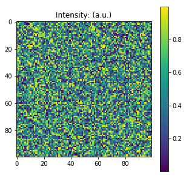
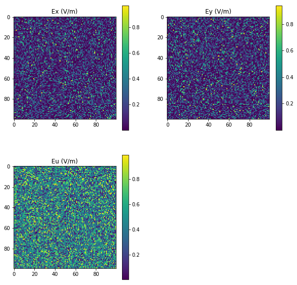
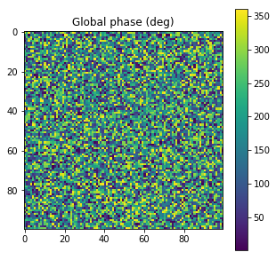
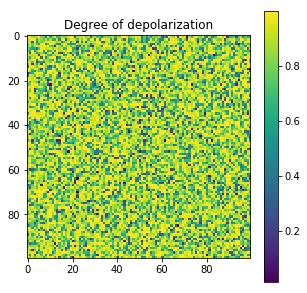

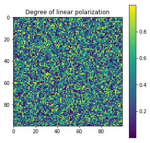
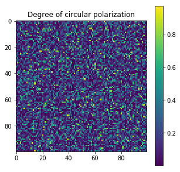
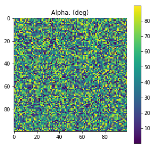
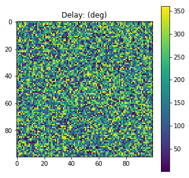
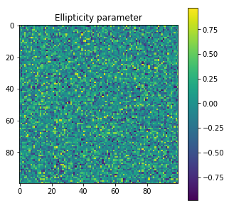
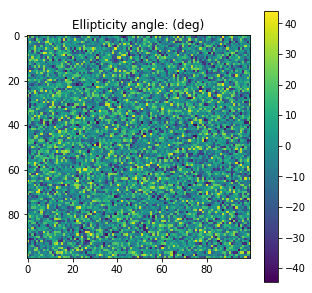
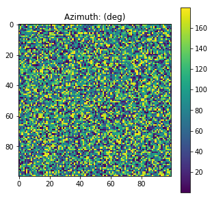


Checks¶
[11]:
# is_physicall
S = Stokes()
N = 10
azimuth = np.random.rand(N, N) * 180 * degrees
ellipticity = (np.random.rand(N, N)-0.5) * 90 * degrees
azimuth[-1] = np.nan
intensity = np.random.rand(N, N)
degree_pol = np.random.rand(N, N)
global_phase = np.random.rand(N, N) * 360 * degrees
S.general_azimuth_ellipticity(azimuth=azimuth, ellipticity=ellipticity, intensity=intensity,
degree_pol=degree_pol, global_phase=global_phase)
cond, dic = S.checks.is_physical(draw=True, give_all=True)
print(dic)
S is physically realizable:
8
4 2
The mean value of param Physicall (cond. 1, S0) is 1.0 +- 0.0
The mean value of param Physicall (cond. 1, S1) is 1.0 +- 0.0
The mean value of param Physicall (cond. 1, S2) is 1.0 +- 0.0
The mean value of param Physicall (cond. 1, S3) is 1.0 +- 0.0
The mean value of param Physicall (cond. 1) is 1.0 +- 0.0
The mean value of param Physicall (cond. 2) is 1.0 +- 0.0
The mean value of param Physicall (cond. 3) is 1.0 +- 0.0
The mean value of param Physicall is 1.0 +- 0.0
{'cond1': array([[ True, True, True, True, True, True, True, True, True,
True],
[ True, True, True, True, True, True, True, True, True,
True],
[ True, True, True, True, True, True, True, True, True,
True],
[ True, True, True, True, True, True, True, True, True,
True],
[ True, True, True, True, True, True, True, True, True,
True],
[ True, True, True, True, True, True, True, True, True,
True],
[ True, True, True, True, True, True, True, True, True,
True],
[ True, True, True, True, True, True, True, True, True,
True],
[ True, True, True, True, True, True, True, True, True,
True],
[ True, True, True, True, True, True, True, True, True,
True]]), 'cond1_0': array([[ True, True, True, True, True, True, True, True, True,
True],
[ True, True, True, True, True, True, True, True, True,
True],
[ True, True, True, True, True, True, True, True, True,
True],
[ True, True, True, True, True, True, True, True, True,
True],
[ True, True, True, True, True, True, True, True, True,
True],
[ True, True, True, True, True, True, True, True, True,
True],
[ True, True, True, True, True, True, True, True, True,
True],
[ True, True, True, True, True, True, True, True, True,
True],
[ True, True, True, True, True, True, True, True, True,
True],
[ True, True, True, True, True, True, True, True, True,
True]]), 'cond1_1': array([[ True, True, True, True, True, True, True, True, True,
True],
[ True, True, True, True, True, True, True, True, True,
True],
[ True, True, True, True, True, True, True, True, True,
True],
[ True, True, True, True, True, True, True, True, True,
True],
[ True, True, True, True, True, True, True, True, True,
True],
[ True, True, True, True, True, True, True, True, True,
True],
[ True, True, True, True, True, True, True, True, True,
True],
[ True, True, True, True, True, True, True, True, True,
True],
[ True, True, True, True, True, True, True, True, True,
True],
[ True, True, True, True, True, True, True, True, True,
True]]), 'cond1_2': array([[ True, True, True, True, True, True, True, True, True,
True],
[ True, True, True, True, True, True, True, True, True,
True],
[ True, True, True, True, True, True, True, True, True,
True],
[ True, True, True, True, True, True, True, True, True,
True],
[ True, True, True, True, True, True, True, True, True,
True],
[ True, True, True, True, True, True, True, True, True,
True],
[ True, True, True, True, True, True, True, True, True,
True],
[ True, True, True, True, True, True, True, True, True,
True],
[ True, True, True, True, True, True, True, True, True,
True],
[ True, True, True, True, True, True, True, True, True,
True]]), 'cond1_3': array([[ True, True, True, True, True, True, True, True, True,
True],
[ True, True, True, True, True, True, True, True, True,
True],
[ True, True, True, True, True, True, True, True, True,
True],
[ True, True, True, True, True, True, True, True, True,
True],
[ True, True, True, True, True, True, True, True, True,
True],
[ True, True, True, True, True, True, True, True, True,
True],
[ True, True, True, True, True, True, True, True, True,
True],
[ True, True, True, True, True, True, True, True, True,
True],
[ True, True, True, True, True, True, True, True, True,
True],
[ True, True, True, True, True, True, True, True, True,
True]]), 'cond2': array([[ True, True, True, True, True, True, True, True, True,
True],
[ True, True, True, True, True, True, True, True, True,
True],
[ True, True, True, True, True, True, True, True, True,
True],
[ True, True, True, True, True, True, True, True, True,
True],
[ True, True, True, True, True, True, True, True, True,
True],
[ True, True, True, True, True, True, True, True, True,
True],
[ True, True, True, True, True, True, True, True, True,
True],
[ True, True, True, True, True, True, True, True, True,
True],
[ True, True, True, True, True, True, True, True, True,
True],
[ True, True, True, True, True, True, True, True, True,
True]]), 'S0': array([[0.25, 0.32, 0.17, 0.02, 0.54, 0.66, 0.38, 0.13, 0.67, 0.63],
[0.61, 0.1 , 0.83, 0.4 , 0.16, 0.93, 0.5 , 0.14, 0.8 , 0.82],
[0.73, 0.12, 0.85, 0.18, 0.17, 0.16, 0.71, 0.16, 0.82, 0.49],
[0.44, 0.98, 0.89, 0.33, 0.95, 0.3 , 0.23, 0.73, 0.99, 0.82],
[0.3 , 0.01, 0.25, 0.39, 0.27, 0.69, 0.33, 0.53, 0.37, 0.22],
[0.21, 0.54, 0.61, 0.1 , 0.03, 0.4 , 0.98, 0.71, 0.58, 0.55],
[0.67, 0.24, 0.71, 0.99, 0.54, 0.67, 0.22, 0.12, 0.72, 0.73],
[0.72, 0.23, 0.56, 0.48, 0.45, 0.53, 0.95, 0.05, 0.23, 0.73],
[0.12, 0.41, 0.86, 0.3 , 0.51, 0.91, 0.31, 0.25, 0.08, 0.82],
[0.58, 0.48, 0.91, 0.3 , 0.41, 0.4 , 0.3 , 0.81, 0.19, 0.64]]), 'cond3': array([[ True, True, True, True, True, True, True, True, True,
True],
[ True, True, True, True, True, True, True, True, True,
True],
[ True, True, True, True, True, True, True, True, True,
True],
[ True, True, True, True, True, True, True, True, True,
True],
[ True, True, True, True, True, True, True, True, True,
True],
[ True, True, True, True, True, True, True, True, True,
True],
[ True, True, True, True, True, True, True, True, True,
True],
[ True, True, True, True, True, True, True, True, True,
True],
[ True, True, True, True, True, True, True, True, True,
True],
[ True, True, True, True, True, True, True, True, True,
True]])}
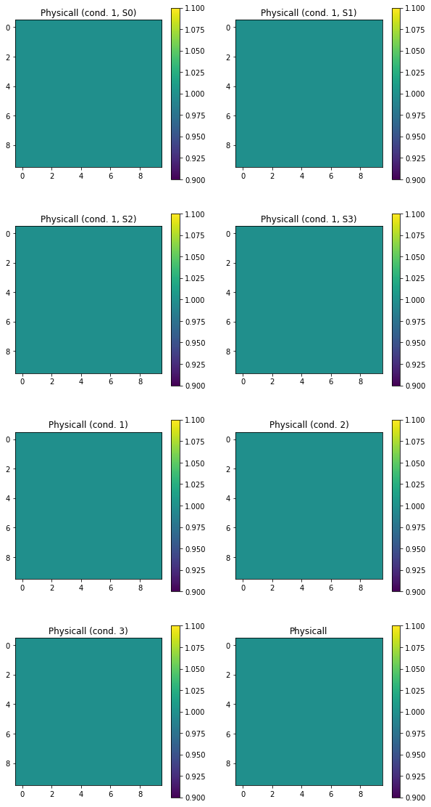
[21]:
S = Stokes()
N = 100
azimuth = np.random.rand(N, N) * 180 * degrees
ellipticity = (np.random.rand(N, N)-0.5) * 90 * degrees
azimuth[-1] = np.nan
intensity = np.random.rand(N, N)
degree_pol = np.random.rand(N, N)
global_phase = np.random.rand(N, N) * 360 * degrees
S.general_azimuth_ellipticity(azimuth=azimuth, ellipticity=ellipticity, intensity=intensity,
degree_pol=degree_pol, global_phase=global_phase)
print(S.checks)
S is physically realizable:
Physicall (cond. 1, S0)
[[ True True True ... True True True]
[ True True True ... True True True]
[ True True True ... True True True]
...
[ True True True ... True True True]
[ True True True ... True True True]
[ True True True ... True True True]]
Physicall (cond. 1, S1)
[[ True True True ... True True True]
[ True True True ... True True True]
[ True True True ... True True True]
...
[ True True True ... True True True]
[ True True True ... True True True]
[ True True True ... True True True]]
Physicall (cond. 1, S2)
[[ True True True ... True True True]
[ True True True ... True True True]
[ True True True ... True True True]
...
[ True True True ... True True True]
[ True True True ... True True True]
[ True True True ... True True True]]
Physicall (cond. 1, S3)
[[ True True True ... True True True]
[ True True True ... True True True]
[ True True True ... True True True]
...
[ True True True ... True True True]
[ True True True ... True True True]
[ True True True ... True True True]]
Physicall (cond. 1)
[[ True True True ... True True True]
[ True True True ... True True True]
[ True True True ... True True True]
...
[ True True True ... True True True]
[ True True True ... True True True]
[ True True True ... True True True]]
Physicall (cond. 2)
[[ True True True ... True True True]
[ True True True ... True True True]
[ True True True ... True True True]
...
[ True True True ... True True True]
[ True True True ... True True True]
[ True True True ... True True True]]
Physicall (cond. 3)
[[ True True True ... True True True]
[ True True True ... True True True]
[ True True True ... True True True]
...
[ True True True ... True True True]
[ True True True ... True True True]
[ True True True ... True True True]]
Physicall
[[ True True True ... True True True]
[ True True True ... True True True]
[ True True True ... True True True]
...
[ True True True ... True True True]
[ True True True ... True True True]
[ True True True ... True True True]]
The mean value of param Physicall (cond. 1, S0) is 1.0 +- 0.0
The mean value of param Physicall (cond. 1, S1) is 1.0 +- 0.0
The mean value of param Physicall (cond. 1, S2) is 1.0 +- 0.0
The mean value of param Physicall (cond. 1, S3) is 1.0 +- 0.0
The mean value of param Physicall (cond. 1) is 1.0 +- 0.0
The mean value of param Physicall (cond. 2) is 1.0 +- 0.0
The mean value of param Physicall (cond. 3) is 1.0 +- 0.0
The mean value of param Physicall is 1.0 +- 0.0
S is linearly polarized:
[[ 0. 0. 0. ... 0. 0. 0.]
[ 0. 0. 0. ... 0. 0. 0.]
[ 0. 0. 0. ... 0. 0. 0.]
...
[ 0. 0. 0. ... 0. 0. 0.]
[ 0. 0. 0. ... 0. nan 0.]
[nan nan nan ... nan nan nan]]
The mean value is nan +- nan
S is circcularly polarized:
[[ 0. 0. 0. ... 0. 0. 0.]
[ 0. 0. 0. ... 0. 0. 0.]
[ 0. 0. 0. ... 0. 0. 0.]
...
[ 0. 0. 0. ... 0. 0. 0.]
[ 0. 0. 0. ... 0. nan 0.]
[nan nan nan ... nan nan nan]]
The mean value is nan +- nan
[False False False ... False False False]
S is right handed:
[[0. 0. 0. ... 0. 1. 0.]
[0. 1. 1. ... 1. 1. 0.]
[0. 1. 0. ... 0. 0. 0.]
...
[0. 1. 1. ... 1. 0. 0.]
[0. 0. 1. ... 1. 1. 1.]
[0. 0. 0. ... 0. 0. 0.]]
The mean value is 0.4894 +- 0.4998876273723925
S is left handed:
[[1. 1. 1. ... 1. 0. 1.]
[1. 0. 0. ... 0. 0. 1.]
[1. 0. 1. ... 1. 1. 1.]
...
[1. 0. 0. ... 0. 1. 1.]
[1. 1. 0. ... 0. 0. 0.]
[0. 0. 0. ... 0. 0. 0.]]
d:\codigo\py_pol\py_pol\utils.py:662: RuntimeWarning: invalid value encountered in less
# Check linear polarization case
d:\codigo\py_pol\py_pol\utils.py:667: RuntimeWarning: invalid value encountered in less
# Check circular polarization case
d:\codigo\py_pol\py_pol\utils.py:668: RuntimeWarning: invalid value encountered in less
cond2 = (~cond1) * ((np.abs(ellipticity + np.pi / 4) < tol_default**2) +
d:\codigo\py_pol\py_pol\utils.py:674: RuntimeWarning: invalid value encountered in arccos
alpha[cond3] = 0.5 * np.arccos(
d:\codigo\py_pol\py_pol\utils.py:677: RuntimeWarning: invalid value encountered in sign
cond4 = cond3 * ((azimuth == 0) + (azimuth == np.pi))
d:\codigo\py_pol\py_pol\utils.py:861: RuntimeWarning: invalid value encountered in greater
q = q - 1.5 * (angle == -np.pi / 4)
d:\codigo\py_pol\py_pol\utils.py:861: RuntimeWarning: invalid value encountered in less
q = q - 1.5 * (angle == -np.pi / 4)
d:\codigo\py_pol\py_pol\utils.py:862: RuntimeWarning: invalid value encountered in greater
q = q - 1 * (angle > -np.pi / 4) * (angle < 0)
d:\codigo\py_pol\py_pol\utils.py:862: RuntimeWarning: invalid value encountered in less
q = q - 1 * (angle > -np.pi / 4) * (angle < 0)
d:\codigo\py_pol\py_pol\utils.py:864: RuntimeWarning: invalid value encountered in greater
q = q + 1.5 * (angle == np.pi / 4)
d:\codigo\py_pol\py_pol\utils.py:864: RuntimeWarning: invalid value encountered in less
q = q + 1.5 * (angle == np.pi / 4)
d:\codigo\py_pol\py_pol\utils.py:866: RuntimeWarning: invalid value encountered in greater
q = q + 2.5 * (angle == np.pi / 2)
d:\codigo\py_pol\py_pol\utils.py:866: RuntimeWarning: invalid value encountered in less
q = q + 2.5 * (angle == np.pi / 2)
d:\codigo\py_pol\py_pol\utils.py:868: RuntimeWarning: invalid value encountered in greater
q = q + 3.5 * (angle == np.pi * 3 / 4)
d:\codigo\py_pol\py_pol\utils.py:868: RuntimeWarning: invalid value encountered in less
q = q + 3.5 * (angle == np.pi * 3 / 4)
d:\codigo\py_pol\py_pol\stokes.py:2939: RuntimeWarning: invalid value encountered in greater
cond2 = ~cond1 * (delay > 0) * (delay < np.pi)
d:\codigo\py_pol\py_pol\stokes.py:2939: RuntimeWarning: invalid value encountered in less
cond2 = ~cond1 * (delay > 0) * (delay < np.pi)
d:\codigo\py_pol\py_pol\utils.py:664: RuntimeWarning: invalid value encountered in greater
alpha[cond1] = azimuth[cond1]
d:\codigo\py_pol\py_pol\stokes.py:2994: RuntimeWarning: invalid value encountered in greater
cond2 = ~cond1 * (delay > np.pi) * (delay < 2 * np.pi)
d:\codigo\py_pol\py_pol\stokes.py:2994: RuntimeWarning: invalid value encountered in less
cond2 = ~cond1 * (delay > np.pi) * (delay < 2 * np.pi)
The mean value is 0.5006 +- 0.4999996399998704
S is polarized:
[[ True True True ... True True True]
[ True True True ... True True True]
[ True True True ... True True True]
...
[ True True True ... True True True]
[ True True True ... True True True]
[False False False ... False False False]]
The mean value is 0.99 +- 0.099498743710662
S is totally polarized:
[[False False False ... False False False]
[False False False ... False False False]
[False False False ... False False False]
...
[False False False ... False False False]
[False False False ... False False False]
[False False False ... False False False]]
The mean value is 0.0 +- 0.0
S is depolarized:
[[ True True True ... True True True]
[ True True True ... True True True]
[ True True True ... True True True]
...
[ True True True ... True True True]
[ True True True ... True True True]
[ True True True ... True True True]]
The mean value is 1.0 +- 0.0
S is totally depolarized:
[[False False False ... False False False]
[False False False ... False False False]
[False False False ... False False False]
...
[False False False ... False False False]
[False False False ... False True False]
[ True True True ... True True True]]
The mean value is 0.0112 +- 0.10523573537539424
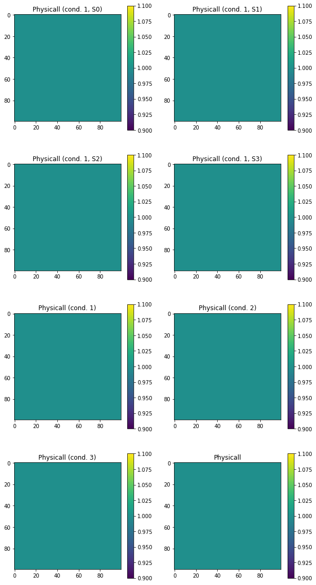
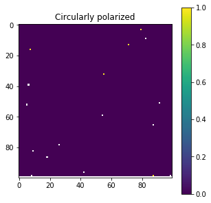
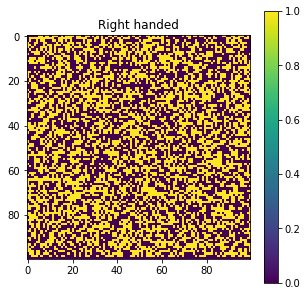
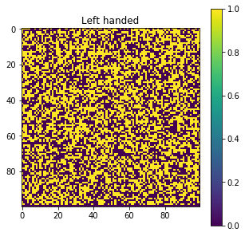
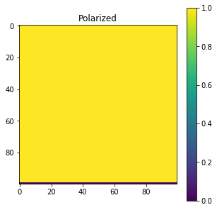
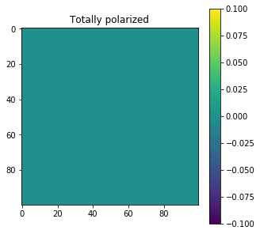
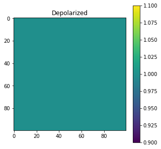
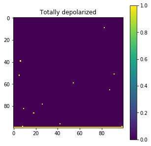
Analysis¶
[25]:
M = (np.random.rand(100, 100, 4) - 0.5) * 2
S = Stokes()
S.from_matrix(M)
_ = S.parameters.components(draw=True)
S.analysis.filter_physical_conditions()
_ = S.parameters.components(draw=True)
_ = S.checks.is_physical(draw=True)
The intensity components of S are (a.u.):
The mean value of param S0: (a.u.) is 0.00732585921943348 +- 0.5738362768435609
The mean value of param S1: (a.u.) is 0.0027023689183885134 +- 0.5739687445423055
The mean value of param S2: (a.u.) is -0.005823076875152242 +- 0.5746678283318901
The mean value of param S3: (a.u.) is -0.0049241252611408595 +- 0.5749055580103019
The intensity components of S are (a.u.):
The mean value of param S0: (a.u.) is 0.49685465973314374 +- 0.2871884188759093
The mean value of param S1: (a.u.) is 0.0028284346855875007 +- 0.3124980599821453
The mean value of param S2: (a.u.) is -0.0026970426675723886 +- 0.31421133842167015
The mean value of param S3: (a.u.) is -0.00020758641499460105 +- 0.3132756040500792
S is physically realizable:
The mean value is 1.0 +- 0.0
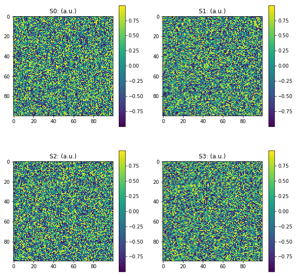
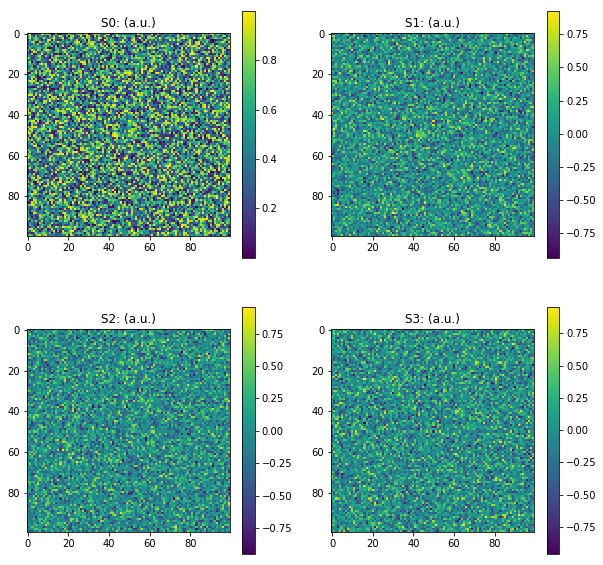
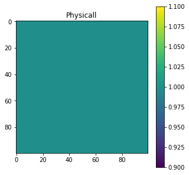
[18]:
a = np.zeros(5)
a[0] = False
print(a)
[0. 0. 0. 0. 0.]
[23]:
if np.nan < 5:
print('Si')
else:
print('No')
No
[ ]: